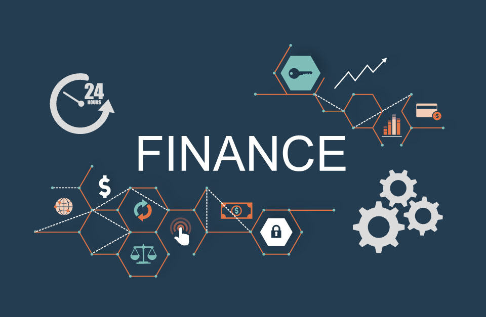

Products
E-commerce Software Development
Electronic Commerce (e-commerce) has rapidly emerged as a new way of doing business in the current economy with the use of the internet as a distribution channel for marketing and selling of goods and services to consumers. The key challenges identified by Ecommerce Industry include:
- Skill shortage and need of Information Technology trained personnel
- Cost of Technology
- Lack of widespread internet access, including household access to the internet
- Lack of e-commerce knowledge
Custom Software Development for Education Industry
 Education Industry is marching ahead with technology and it continues to create innovative and creative opportunities, thus forging a continuous cycle of learning and development. The aim of education software is to achieve better facilities, convenience, flexibility and access to global experts for learners, educators, and management. From schools, colleges, universities to corporate world, education and learning management software has played a major role in addressing various issues being faced on a daily basis:
Education Industry is marching ahead with technology and it continues to create innovative and creative opportunities, thus forging a continuous cycle of learning and development. The aim of education software is to achieve better facilities, convenience, flexibility and access to global experts for learners, educators, and management. From schools, colleges, universities to corporate world, education and learning management software has played a major role in addressing various issues being faced on a daily basis:
- Scattered resources - learner, educator and learning material
- Lack of mobility
- Lack of collaboration between school, students, and parents
- Administrative activities are still carried out on papers and files
- Inappropriate focus on research and development
- Creating integrated platform for several age groups and skill-sets
Software for Financial Services

Financial services works in a dynamic regulatory environment where it has to deal with various challenges that include, but may not be limited to:
- Continued focus on managing Operational and IT risks
- Sustaining in the competitive market
- Revenue growth
- Increase in customer base
- Ensuring customer retention
Custom Software Development for Healthcare Industry
One of the most crucial industry dealing with lives and emergencies is Healthcare. The aim of the healthcare providers is to achieve best possible support for patient care and provide optimal medical care. Healthcare has grown exceptionally in the last few decades leading to the implementation of medical software. From clinics to hospitals, software has played a major role in addressing various issues being faced by them on a daily basis:
- Continued focus on managing Operational and IT risks
- Maintaining information confidentiality
- Accurate people management solutions